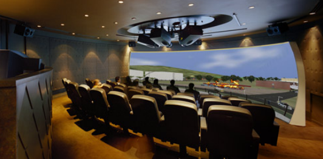

Professional flight and driving simulation display control systems for training and visualization.

Our Simulation Solutions provide professional display control for flight simulators, driving simulators, and other immersive training environments. These systems support multi-channel projection, real-time rendering, and interactive feedback.
Base on Professional workstation and GPU embedded display output Wrapping, an combined Windows desktop can be mapped to any screen shape, including curve, bowl and dome screens.
Used by aviation academies, military training centers, and professional driving schools worldwide.
Professional flight simulator display control.
Realistic driving simulator visualization.
Virtual reality integration support.
Multi-projector display systems.
Synchronized rendering across all channels.
Performance tracking and analytics.
| Display Channels | Up to 12 channels supported, may extended by multi-screen hubs . |
|---|---|
| Resolution | 4K per channel |
| Frame Rate | 60fps synchronized |
| VR Support | Oculus, HTC Vive, Valve Index |
| Input Devices | Joysticks, steering wheels, pedals |
| Network Sync | NTP/PTP synchronization |
| Operating System | Windows 10/11 |
| Hardware | Desktop-GPU workstation |
| Windows Desktop Wrapping | NVIDIA Desktop Wrapping, Windows DWM Hook, or Main Screen cloning |
Experience professional simulation display control for your training environments.
Contact Sales Download Trial View Documentation